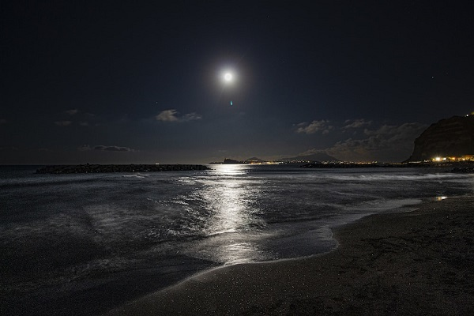
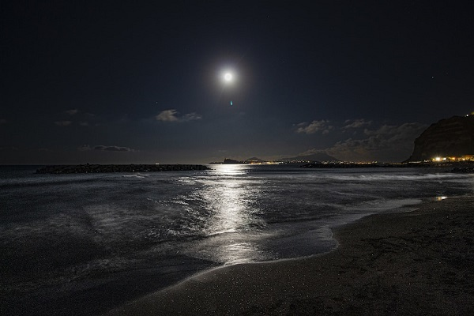
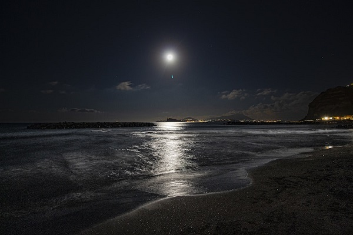
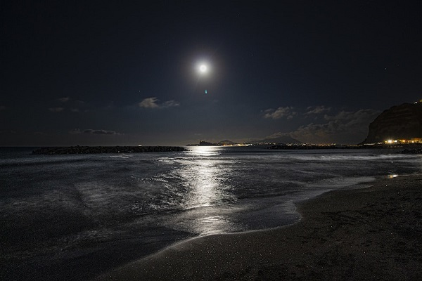

Acerca de mí
Nací en Acapulco de Juárez en el 2002. Me gusta escuchar música, leer libros o mangas, hacer deporte, entre los que más practico están el fútbol, voleibol, tenis, etc. He practicado la mayoría de los deportes a lo largo de mi vida. También disfruto salir a caminar o correr, estar solo y tomar café. Me encanta ir al cine para ver películas de acción o animadas. Adoro a los animales, pero tengo preferencia por gatos y perros por igual. Tengo 2 tatuajes y pienso hacerme más. Divido a mis artistas favoritos por categoría, pero si elijo a uno, prefiero a José José. Disfruto más la noche y prefiero los climas fríos. Me encanta ver series japonesas o de criminología, así como criaturas mitológicas como los dragones y los diferentes tipos de cultura.

